| Class | Major Skills | Minor Skills | Traits |
|---|---|---|---|
|
Sentinel
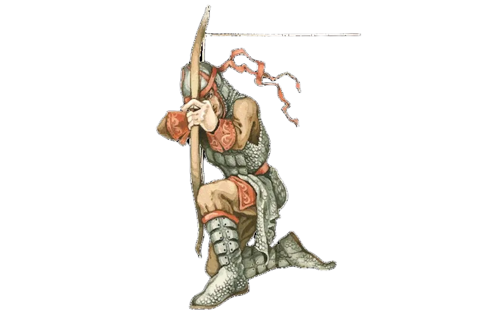 |
HeavyArmor Marksman |
Block Smithing |
Sentinel Stance
Enter Sentinel Stance after not moving for 1.5 seconds.Standfast Ballistics
While in Sentinel Stance, crossbow attacks generate Offensive stacks.
Offensive stacks increase crossbow damage while in Sentinel Stance. Stack
strength and duration scales with Marksman skill.Iron Anchoring
While in Sentinel Stance blocking or crossbow bashes generate Defensive
stacks. Defensive stacks increase armor and reduce stagger while in
Sentinel Stance. Stack strength and duration scales with Heavy Armor
skill.Steadfast Constitution
Starting Health is increased by 25%.
|
|
Merchant
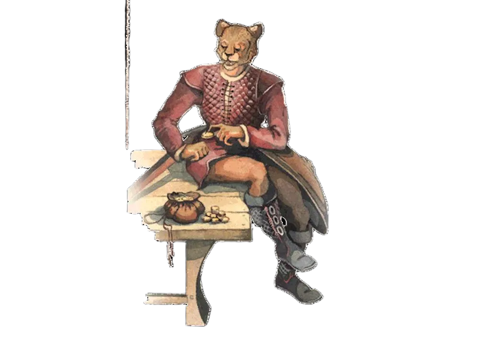 |
Speechcraft Smithing |
Alchemy LightArmor |
Silver Tongue
Buying and selling prices scale more effectively with Charisma skill.Trade Caravan
Carry weight and selling prices increase as Smithing skill improves.
|
|
Ranger
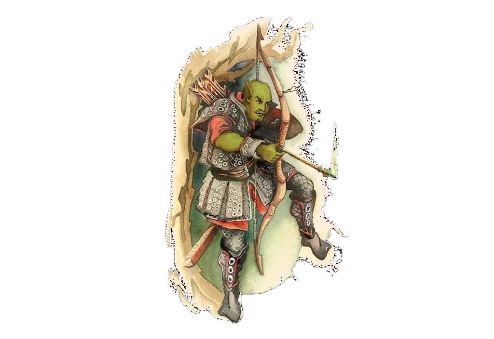 |
Marksman LightArmor |
Sneak Alchemy |
Penetrating Shot
Close range bow shots are more effective at piercing through armor,
scaling with Marksman skill.Skirmisher's Stride
Firing a bow grants increased movement speed for 3 seconds, scaling with
your Light Armor skill.Field Endurance
A hunter’s conditioning increases starting stamina by 25%.
|
|
Assassin
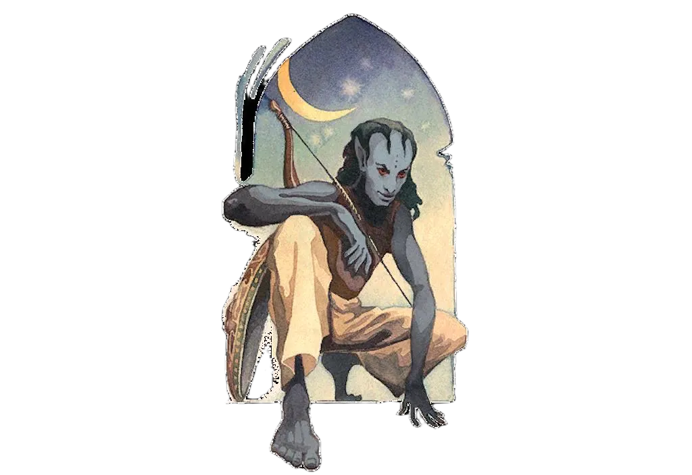 |
Sneak OneHanded |
Alchemy LightArmor |
Backstab
Attacks made from behind with Daggers deal increased damage and critical
damage, scaling with One-Handed skill.Ambush
Dagger backstab sneak attacks deal increased damage and have increased
critical strike chance, scaling with Agility skill.Shadow Conditioning
Years of silent movement grant +25% starting stamina.
|
|
Barbarian
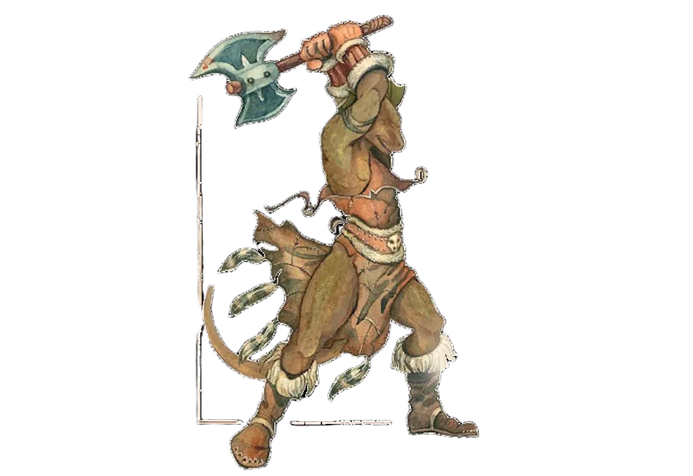 |
TwoHanded LightArmor |
Guard Smithing |
Crushing Blows
Two-Handed power attacks deal additional Stamina damage, scaling with your
Two-Handed skill.Unstoppable
Take reduced stagger damage from enemies below 50% Stamina, scaling with
your Light Armor skill.Battle Hardened
+12.5% Health and +12.5% Stamina.
|
|
Bard
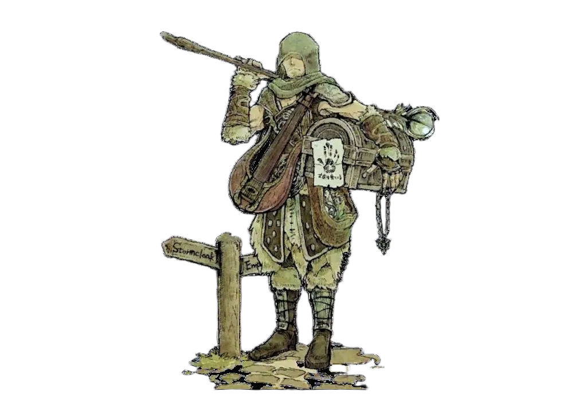 |
Speechcraft Illusion |
Pickpocket Lockpicking |
Bardic Performance
Song magnitude and duration are increased. Effects scale with Charisma
skill.Inspiring Presence
While affected by one of your songs, Courage, Frenzy and Calm spells are
more effective. Effects scale with Illusion skill.Wanderer’s Rhythm
Years of travel and performance grant +12.5% Stamina and +12.5% Magicka.
|
| Reaver |
OneHanded Conjuration |
HeavyArmor Pickpocket |
Dark Armament
Bound Weapons deal increased damage, scaling with One-Handed skill.Soul Rend
Bound Weapon attacks absorb Health, scaling with Conjuration skill.Grave-Bound Vitality
Exposure to necromantic energies grants +12.5% Health and +12.5% Magicka.
|
|
Brawler
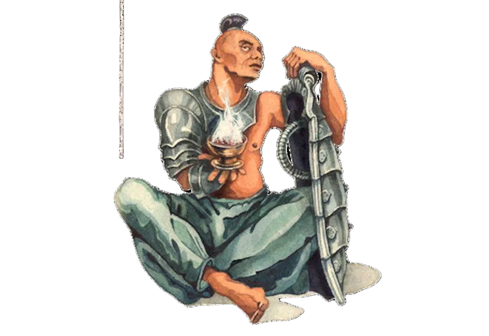 |
HandToHand Guard |
HeavyArmor Smithing |
One-Two Punch
Every second consecutive unarmed light attack deals increased damage.
Effect scales with Hand to Hand skill.
Haymaker
Unarmed power attacks deal increased damage, but increase damage taken by
30% while attacking. Effect scales with Hand to Hand skill.
Windup
Blocking while unarmed grants Windup for several seconds. While Windup is
active, incoming damage is reduced and Haymaker no longer increases damage
taken. Effect scales with Guard skill.Pit Fighter Conditioning
Endless arena combat builds resilience: +25% starting Health.
|
|
Crusader
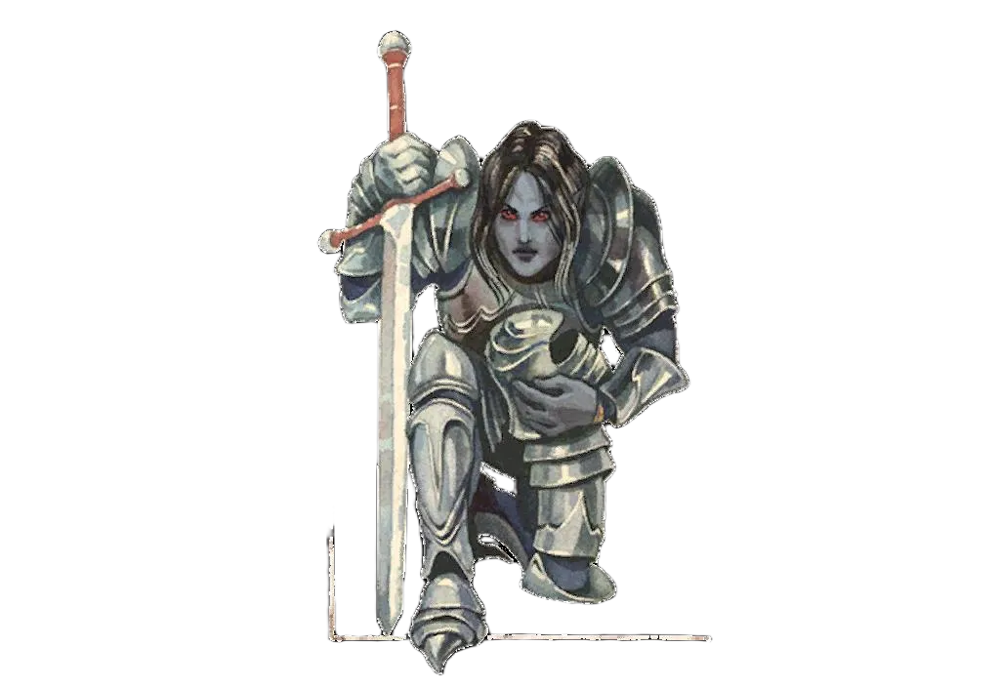 |
TwoHanded Restoration |
Guard HeavyArmor |
Divine Protection
Power attacks grant a healing over time effect lasting 10 seconds and sun
spells deal increased damage, scaling with Restoration skill.Consecrate
While under Divine Protection, two-handed weapons deal additional sun
damage against undead, scaling with Two-Handed skill.Blessed Resolve
+25% starting Health.
|
|
Spellblade
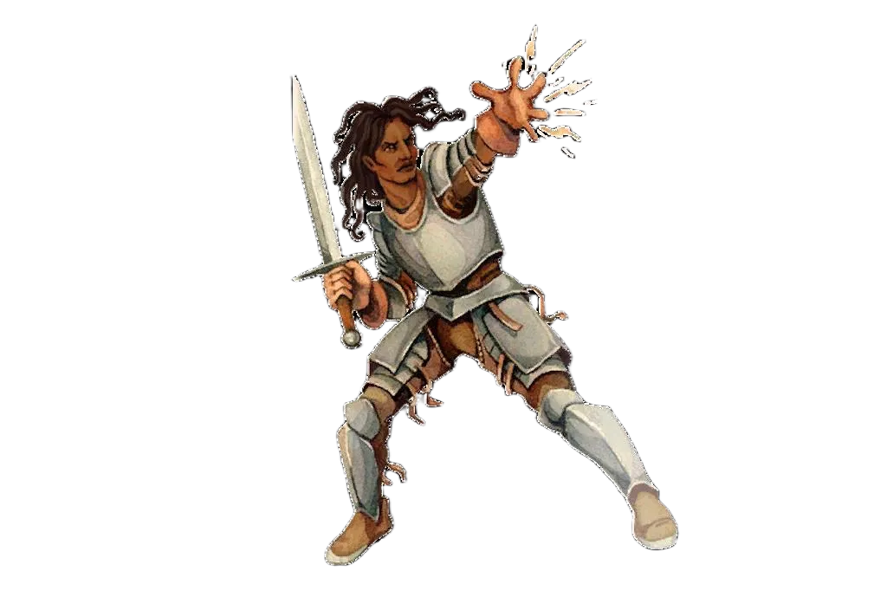 |
OneHanded Destruction |
LightArmor Alteration |
Arcane Flow
Casting any spell while a weapon is equipped empowers melee attacks,
increasing weapon damage for a short duration, scaling with One-Handed
skill.Spellbreak Momentum
Landing a melee attack empowers Destruction spells, increasing spell
damage for a short duration, scaling with Destruction skill.Battle Caster
Martial and arcane training grants +12.5% Stamina and +12.5% Magicka.
|
|
Witch Doctor
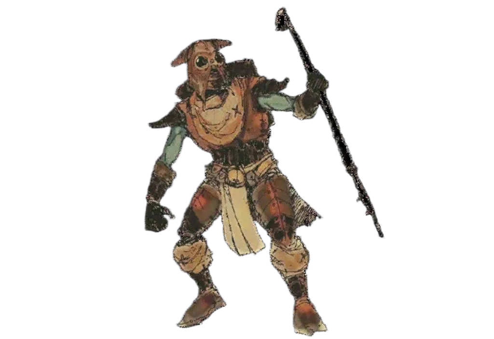 |
Restoration Alchemy |
Conjuration OneHanded |
Virulent Brews
Poisoned weapons gain additional poison charges as Alchemy skill
increases. Gain 1 charge every 30 Alchemy skill, up to 4 at 100.Toxic Mastery
Poison damage from spells is increased against targets affected by Alchemy
poisons, scaling with Restoration skill.Tribal Apothecary
+25% Magicka.
|
|
Arcanist
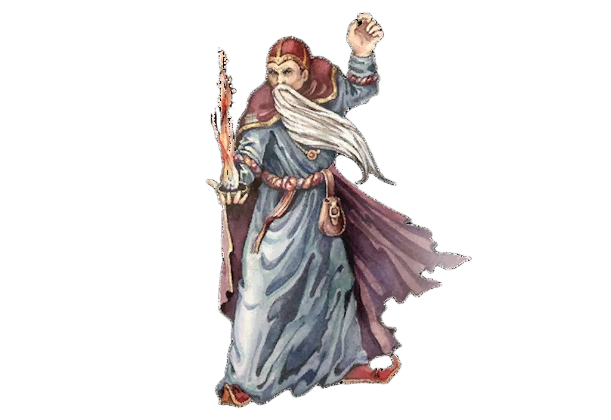 |
Destruction Alteration |
Restoration Illusion |
Catalyst
Casting non-concentration spells applies Catalyst, reducing cost of next
spell. Scales with Alteration skill.Backdraft
Next non-concentration spell consumes Catalyst and increases magnitude and
duration of the spell. Scales with Destruction skill.Aetheric Overflow
+25% Magicka.
|
|
Artisan
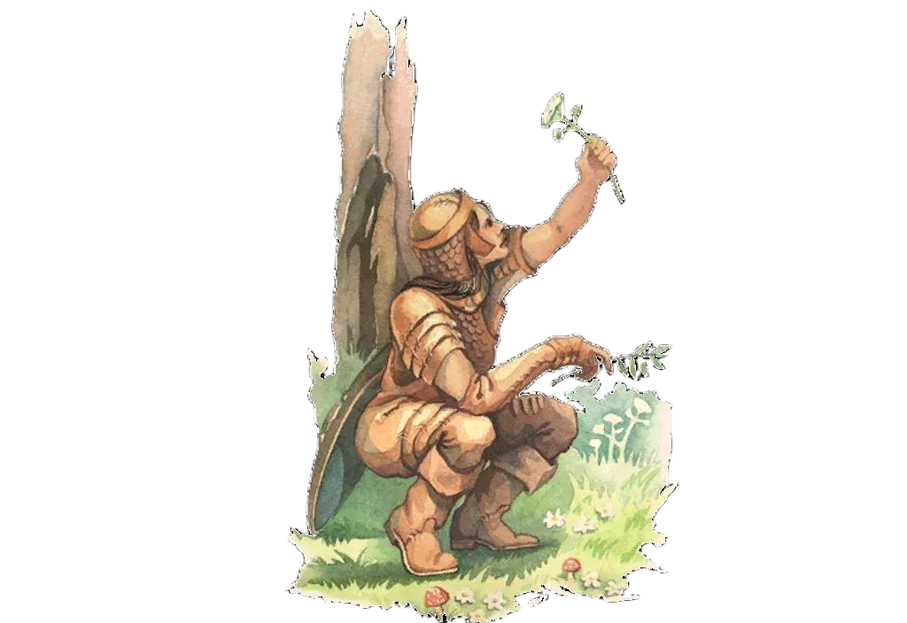 |
Enchanting Smithing |
Alchemy Speechcraft |
Arcane Craftsmanship
Enchanted items gain 1 additional enchantment slot but are half as strong.
Enchantments scale more effectively with Enchanting level.Masterwork Tempering
Tempering weapons and armor is more effective, scaling with Smithing
skill.
|
|
Cleric
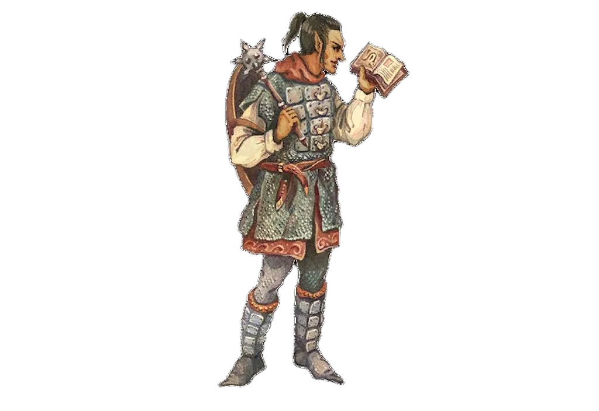 |
Restoration HeavyArmor |
Speechcraft OneHanded |
Divine Communion
The effects and duration of blessings are increased based on Restoration
skill.Empowered Blessing
Once every 30 seconds, blocking empowers the Cleric's active blessing.
Divine Blessing
While empowered, the Cleric regenerates Health over time. Healing scales
with Restoration skill.Daedric Blessing
While empowered, nearby enemies suffer Poison damage over time. Damage
scales with Restoration skill.Sacred Bulwark
While under the effects of an Empowered Blessing, damage taken is reduced
based on Heavy Armor skill.Sanctified Constitution
Divine favor fortifies the body: +12.5% Magicka and +12.5% Health.
|
|
Knight
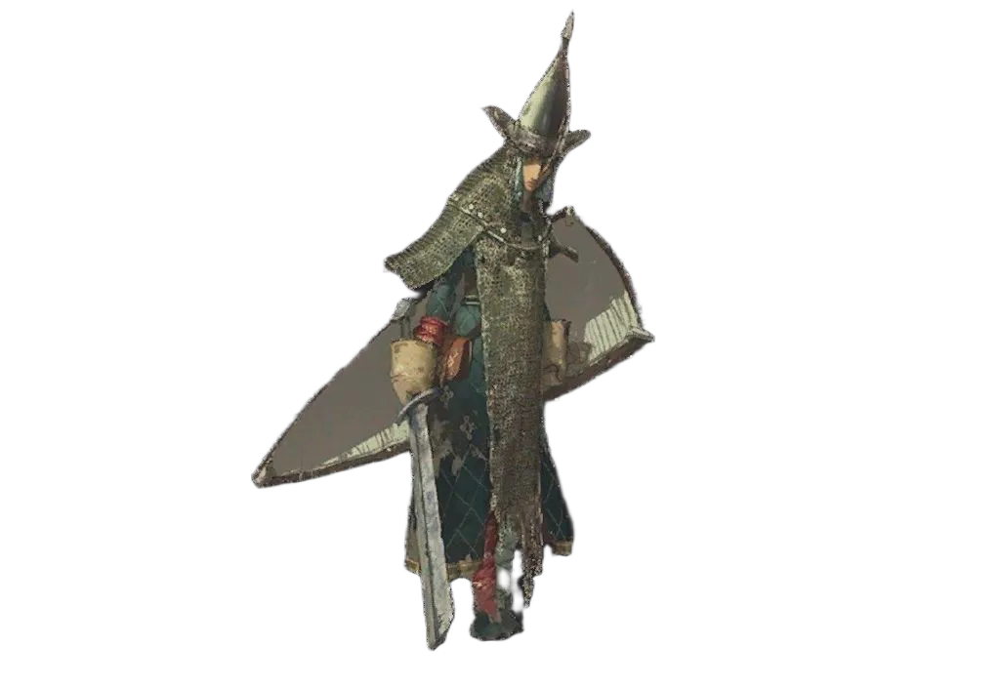 |
Block HeavyArmor |
OneHanded Speechcraft |
Steeled Advance
Blocking with a shield increases damage done for 10 seconds stacking up to
three times. Scales with Block skill.Iron Bastion
Blocking with a shield reduces damage and stagger taken for 10 seconds
stacking up to three times. Scales with Heavy Armor skill.Knights Resolve
+25% starting Health.
|
|
Beggar
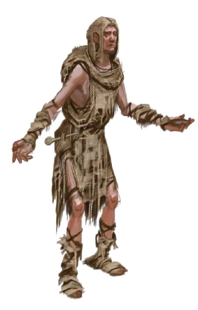 |
None | None |
Destitute
Begins the game with a single Gold coin and no skill bonuses.
Chosen
Deal massively increased damage to Dragons and Dragon Priests, and take
significantly reduced damage from them.
Starved Body
Severely weakened starting physiology reduces all stats to 66% of normal.
|
|
Monk
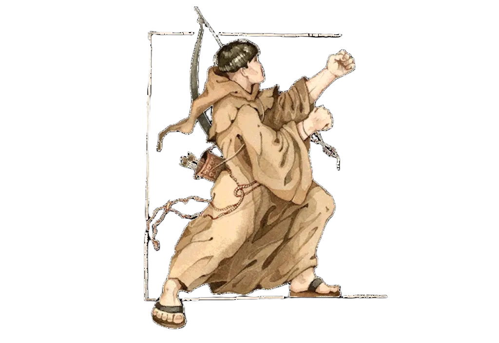 |
HandToHand Alteration |
Agility Restoration |
Pressure Points
Unarmed power attacks apply Pressure Point debuffs in sequence. The first
strike reduces damage dealt, the second reduces armor, and the third
reduces blocking effectiveness. Effects scale with Hand to Hand skill.Iron Fist
While protected by a flesh spell, unarmed attacks deal additional damage.
Effect scales with Alteration skill.Inner Discipline
Meditation and control increase stamina by +25%.
|
|
Duelist
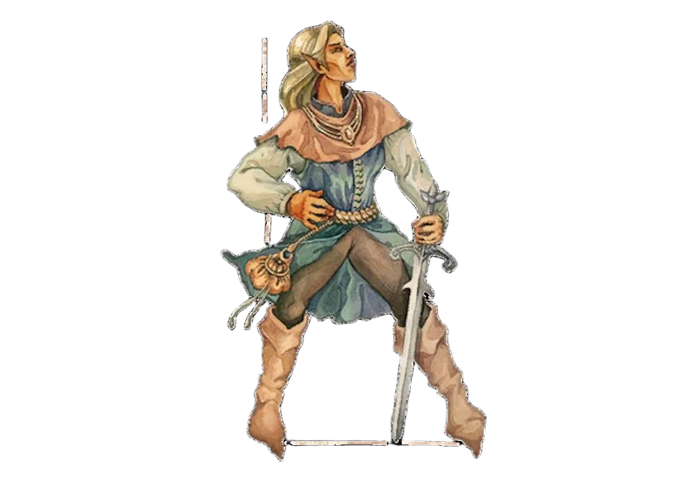 |
OneHanded Block |
LightArmor Sneak |
Tempo
While dual wielding, not being hit for 5 seconds grants Tempo. Attacks and
blocks gain effects while active.Pressure
While Tempo is active, light attacks against attacking enemies reduce
their attack speed. Scales with One-Handed.No Reprieve
While Tempo is active, power attacks against attacking enemies reduces
their movement speed. Scales with One-Handed.Reposition
While Tempo is active, blocking or dodging grants a movement speed burst
for 1.5 seconds. Scales with Block.Effortless Grace
+25% starting Stamina.
|
|
Nightblade
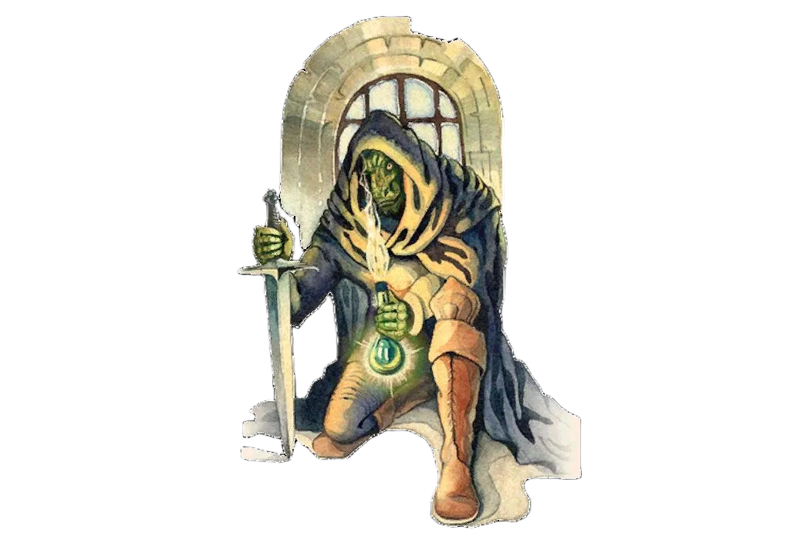 |
Sneak Illusion |
OneHanded Destruction |
Veiled Mind
Illusion spells are more powerful while undetected. Effect strength scales
with Illusion skill.Silent Arcana
Spell casting sound is reduced based on Agility skill.Shadowborn Vitality
Attunement to darkness grants +12.5% Stamina and +12.5% Magicka.
|
|
Berserker
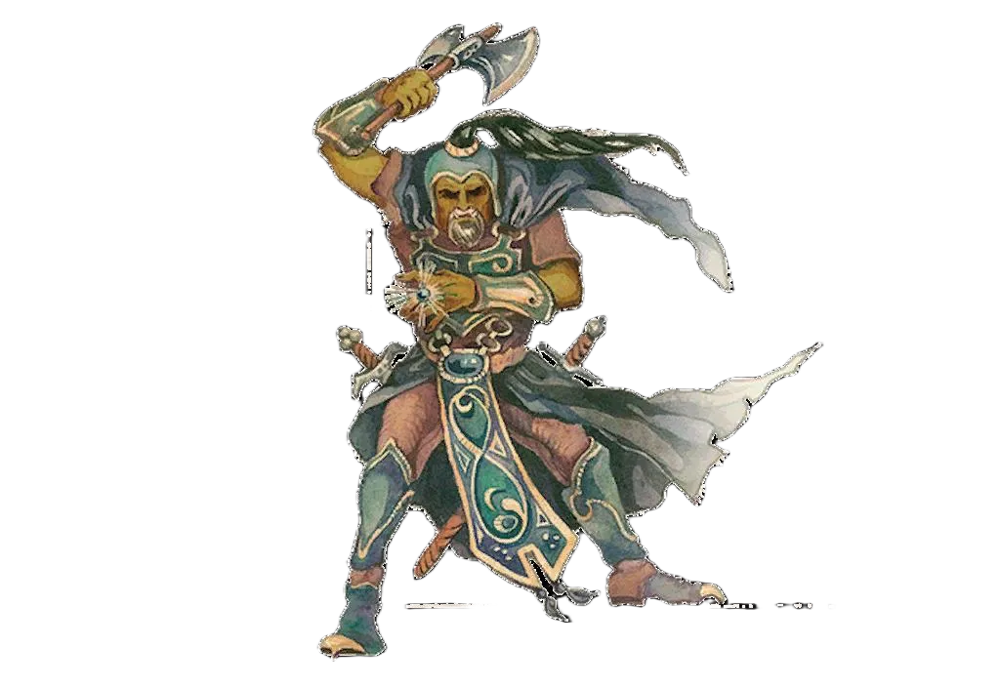 |
OneHanded LightArmor |
Block Smithing |
Blood Rage
Taking damage while dual wielding and power attacking triggers Blood Rage
for 5 seconds. Can only trigger once every 15 seconds.Wild Swings
While in Blood Rage, light attacks absorb Health and power attacks absorb
Health and Stamina. Scales with One-Handed.Unstoppable
While attacking in Blood Rage, take reduced damage and stagger. Scales
with Light Armor.Exhausted
After Blood Rage ends, become Exhausted for 5 seconds. While exhausted
attacks cost 20% more Stamina.Combat Adrenaline
+25% Stamina.
|
|
Scout
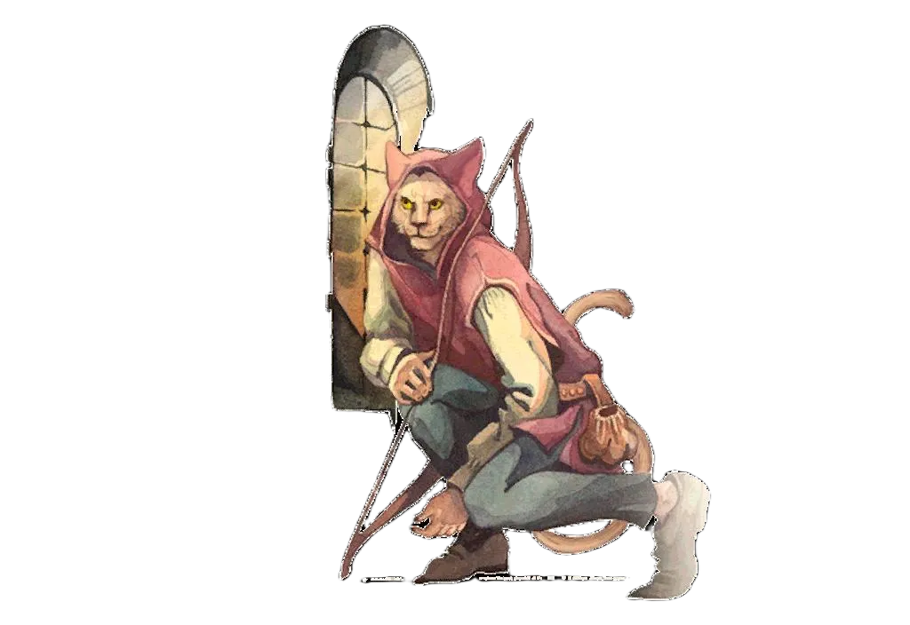 |
Marksman Agility |
Alteration Pickpocket |
Pathfinder
While running or sprinting, movement speed and jump height are increased.
Effect scales with Agility skill.Ambush Shot
Sneak attacks with bows are slower, but deal increased sneak attack
damage. Effect scales with Marksman skill.Lead the Way
Scout's training grants +25% starting Stamina.
|
|
Shaman
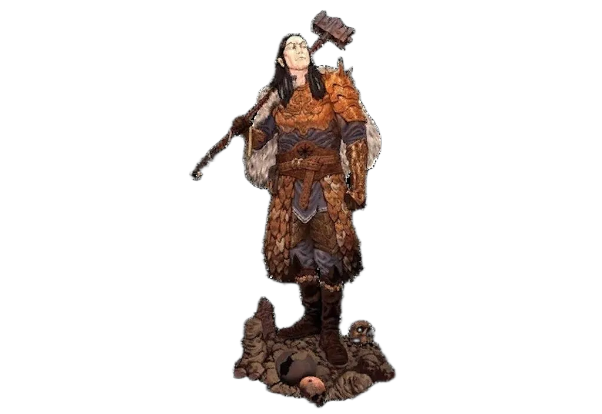 |
Conjuration Restoration |
TwoHanded LightArmor |
Spirit Link
Shamans can only summon spirit and elemental types. The Shaman’s abilities
are empowered while a summon is active. The type of summon determines the
effect: Elemental (Atronach) or Spirit/Animal.Elemental Surge
While an Elemental summon is active, spell magnitude is increased and
incoming magical damage is reduced. Spell magnitude scales with
Conjuration. Magic damage reduction scales with Restoration.Feral Spirit
While a Spirit or Animal summon is active, Two-Handed damage is increased
and incoming physical damage is reduced. Melee damage scales with
Conjuration. Physical damage reduction scales with Restoration.Spirit Tempering
Tribal resilience grants +12.5% Stamina and +12.5% Magicka.
|
|
Sorcerer
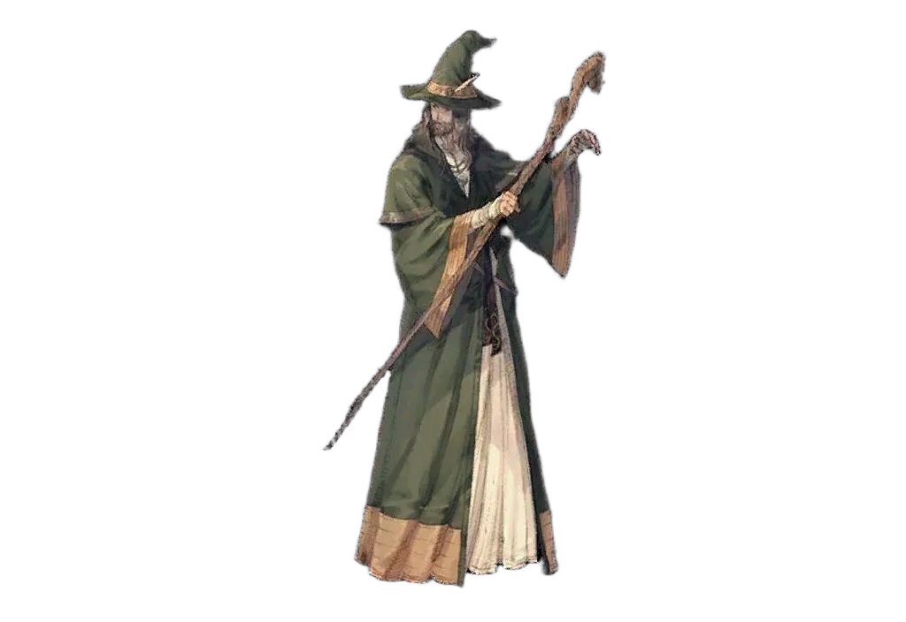 |
Alteration Enchanting |
Destruction Illusion |
Arcane Focus
While a staff is equipped, spell magnitude is increased. Effect scales
with Alteration skill.Scroll Savant
Scrolls are more effective. Effect scales with Enchanting skill.Mystic Vestments
Spell duration is increased while wearing robes. Effect scales with
Alteration skill.Arcane Implements
Enchantments when wearing a robe and stave are more effective. Effect
scales with Enchanting skill.Arcane Vitality
Deep magical attunement grants +25% Magicka.
|
|
Battlemage
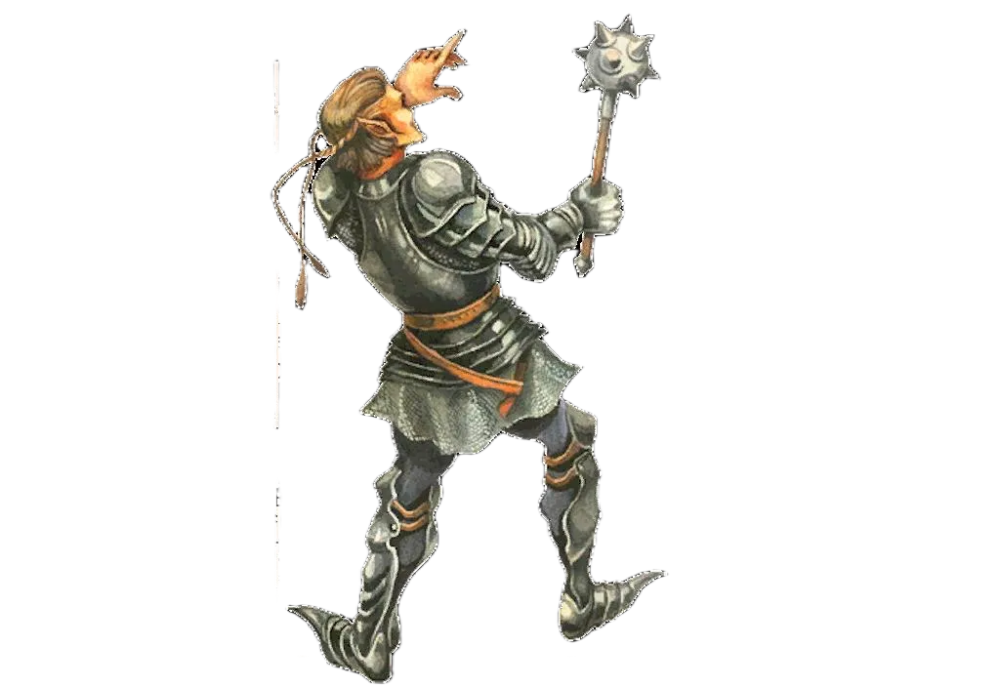 |
HeavyArmor Alteration |
Destruction Enchanting |
Arcane Bulwark
While casting spells, incoming damage and stagger are reduced. Effect
scales with Heavy Armor skill.Reactive Flesh
Flesh spells also reduce magic damage, and taking damage while a flesh
spell is active increases spell magnitude for a short duration. Effect
scales with Alteration skill.Battle-Forged Will
Hybrid discipline grants +12.5% Magicka and +12.5% Health.
|
|
Warlock
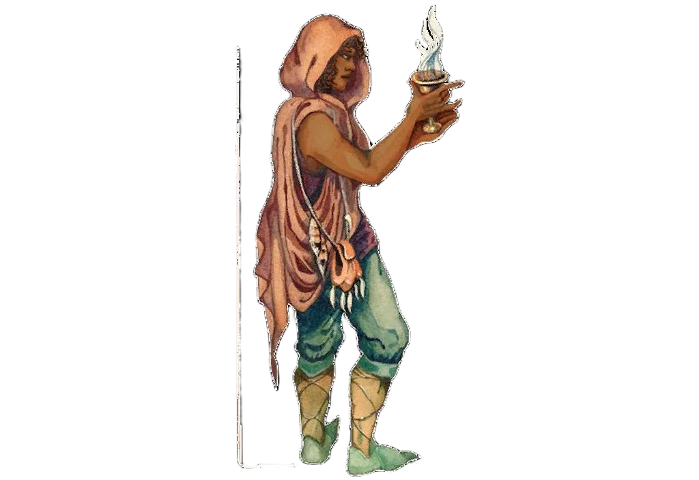 |
Conjuration Illusion |
Destruction Alteration |
Demonic Soul
Warlocks can only conjure undead or dremora type summons.Dread Servant
While an undead summon is active, Fear spells are more effective and last
longer. Effects scale with Illusion skill.Harvest
Deal increased damage to feared targets. Effects scale with Conjuration
skill.Cursed Essence
Dark pact increases Magicka by +25%.
|
|
Thief
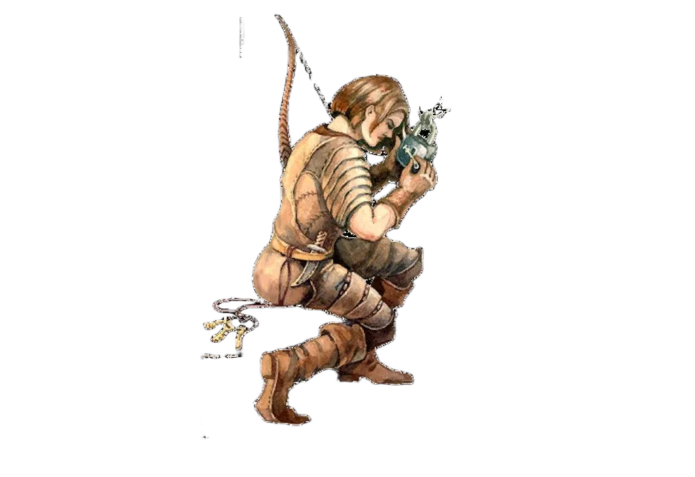 |
Pickpocket Sneak |
Illusion LightArmor |
Swift Entry
Entering Sneak grants a burst of movement speed for 3 seconds. Movement
speed scales with Agility. This effect has a 10 second cooldown.Cunning Hands
Lockpicking success and chance to be caught, pickpocket success, and lock
sweet spot size improve with Security skill.Cutpurse Conditioning
Thieves’ reflexes grant +25% starting Stamina.
|
|
Warrior
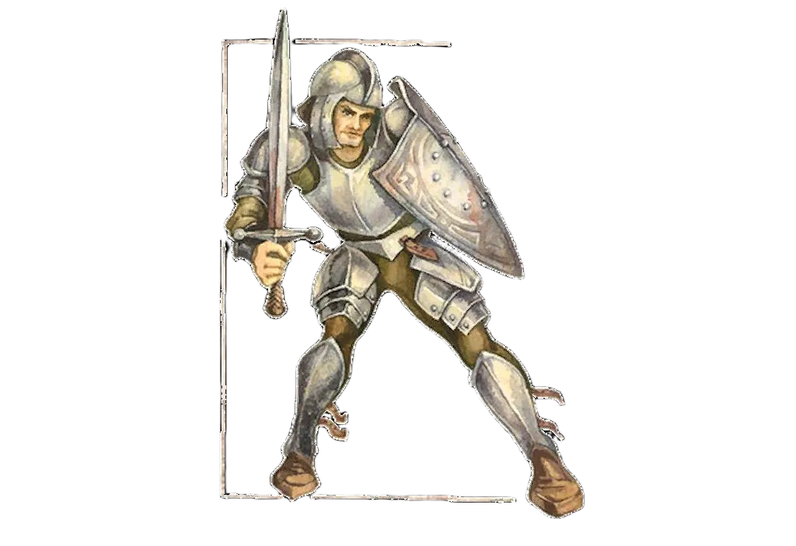 |
HeavyArmor TwoHanded |
Block Smithing |
Relentless Strikes
Power attacks deal increased damage and cost additional Stamina. Scales
with Two-Handed skill.War Momentum
Performing a power attack invigorates the Warrior, restoring Stamina over
time. Stamina regeneration scales with Heavy Armor skill.Warrior’s Endurance
Battlefield conditioning grants +25% starting Health.
|
|
Witchhunter
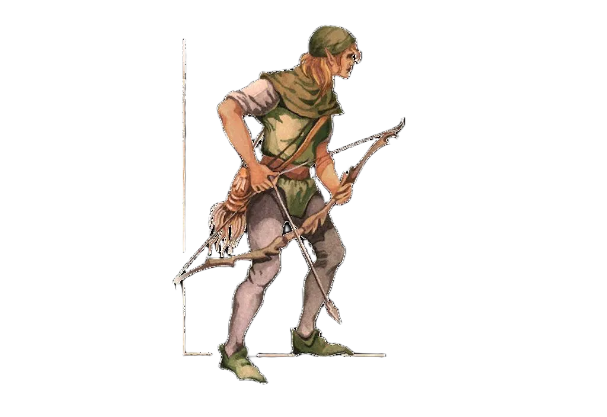 |
Marksman Alchemy |
TwoHanded LightArmor |
Potent Draughts
Beneficial and detrimental potions last longer and have increased
effectiveness. Effect scales with Alchemy skill.Prepared Hunter
While under the effects of any beneficial potion, the Witchhunter gains
increased damage reduction and reduced stamina costs for attacks. Effect
scales with Alchemy skill.Silvered Execution
Silver weapons gain increased damage, critical damage and critical chance
against creatures, undead and supernatural enemies scaling with Two-Handed
skill.Unnatural Enhancement
Survival-hardened physique grants +25% starting Stamina.
|